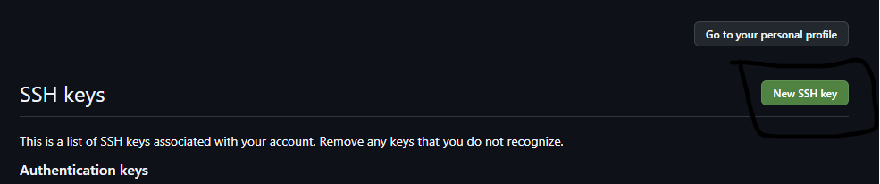
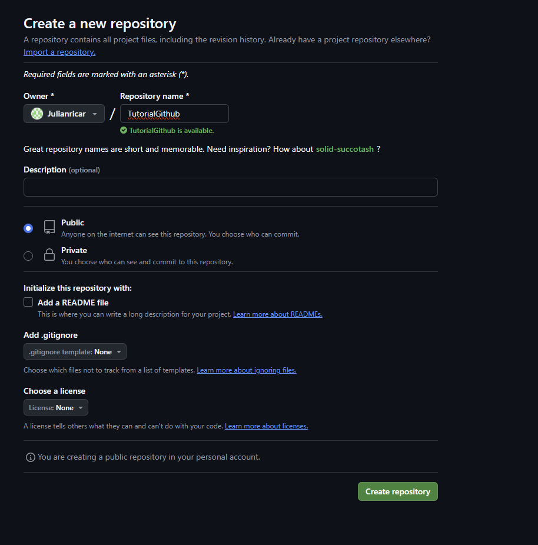

TUTORIAL DE GITHUB
Iniciacion del repositorio localmente
El primer paso para la inicializacion del repositorio localmente es verificar que en la consola nos encontramos en la carpeta en la cual deseamos crear el repositorio, para crear el repositorio local utilizamos el comando git init.
Despues de esto agregamos los archivos al repositorio con el comando git add "NombreArchivo", como yo quiero agregar todos los archivos que tengo en la carpeta utilizo el comando git add *.
Ya para terminar la creacion del repositorio utilizamos el commando git commit -m "ComentarioModificacion", con el cual almacenamos los cambios hechos al repositorio.

Creación de branches
Un branch es una rama de desarrollo que me permite modificar el contenido del repositorio sin afectar otra ramas del repositorio, en este ejemplo la voy a utilizar para modificar la entrada que antes se llamaba software para crear este tutorial.
Los branch se crean con el comando git checkout -b "NombreBranch", este comando checkout "NombreBranch" tambien funciona para cambiar entre los diferentes branch del proyecto. Con el comando git branch puedo ver los diferentes branch creados en el proyecto

Despues de tener los cambios hechos volvemos a utilizar los comandos git add "NombreArchivo" y git commit -m "Comentario", para subir los archivos modificados y guardar los cambios respectivamente.

Ya para terminar utilizamos el comando git merge "NombreBranch" para unificar ese branch con la rama de desarrollo principal, pero antes de usar este comado debemos seleccionar el branch principal con el comando git checkout master.
Con esato ya tendriamos en el branch principal todas las modificaciones hechas en el branch "Github"
Agrengando un repositorio remoto
Este paso es para poder vincular nuestro repositorio local con los repositorios de github.
El primer paso es crear nuestra llave publica SSH, esto se hace con el codigo ssh-keygen -t ed25519 -C "email@email.com"donde el email debe ser el email vinculado a Github.
Ahora iniciamos el agente SSH y agregamos nuestra clave SSH generada, esto se hace con los codigos $ eval "$(ssh-agent -s)" y $ ssh-add ~/.ssh/id_ed25519
Despues de esto vinculamos github con nuestra clave SSH, visualizamos la clave con el comando $ cat ~/.ssh/id_ed25519.pub, copiamos la clave generada, vamos a github abrimos la configuracion, y pegamos la clave SSH.

Creamos nuestro repositorio en Github, copiamos el texto que dice ..or push an existing repository from the command line, lo pegamos en la consola y ejecutamos ese codigo, con esto ya tenemos nuestro repositorio local vinculado con el repositorio de github.
